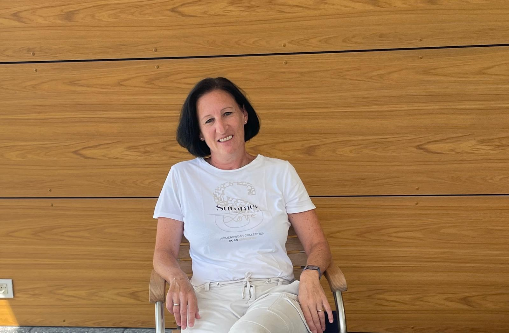

Dr. Karin Egarter-Scheiflinger
- Fachärztin für Innere Medizin
- Fachärztin für Nierengesundheit & Bluthochdruck
- Fachärztin für Allgemein- & Familienmedizin
Egal, ob präventive Maßnahmen, akute oder chronische Beschwerden – ich nehme mir Zeit, Ihnen zuzuhören. Empathie und ein respektvoller Umgang sind mir besonders wichtig, denn Vertrauen ist die Grundlage jeder guten Behandlung.
Für mich steht das Gespräch mit der Patientin oder dem Patienten an erster Stelle – erst wenn ich Sie und Ihre Anliegen wirklich verstehe, kann ich Sie optimal begleiten. Durch die laufende Teilnahme an Fortbildungen und Kongressen bleibe ich für Sie am neuesten Stand der Wissenschaft.
Mein Weg in die Innere Medizin
Durch meine langjährige Tätigkeit als Internistin im Krankenhaus – zuletzt als Primarärztin und Oberärztin mit Leitung der Dialyse- und Nierenambulanz – bringe ich umfassende praktische Erfahrung in meine Wahlarztordination ein.

Medizinstudium
Medizinische Universität Wien · Promotion zum Doktor der gesamten Heilkunde
Universitätsklinik für Innere Medizin I
AKH Wien, Abteilung für Hämatologie und Hämostaseologie
Ausbildung zur Ärztin für Allgemeinmedizin
A.ö. Krankenhaus Spittal/Drau und LKH Villach
Ausbildung zur Fachärztin für Innere Medizin
A.ö. Krankenhaus Spittal/Drau
Notärztin
Österreichisches Rotes Kreuz
Ausbildung im Additivfach Nephrologie und Hypertensiologie
Klinikum Klagenfurt am Wörthersee
Fachärztin für Innere Medizin, Nephrologin
A.ö. Krankenhaus Spittal/Drau
Erste Oberärztin der Internen Abteilung
Leitung der Dialyse- und Nierenambulanz, A.ö. Krankenhaus Spittal/Drau
Primarärztin der Internen Abteilung
A.ö. Krankenhaus Spittal/Drau
Oberärztin & Leitung der Dialyse- und Nierenambulanz
A.ö. Krankenhaus Spittal/Drau — Beginn der Wahlarztordination
„Genießen Sie Ihr Leben, wir kümmern uns um Ihre Beschwerden.“
Diplome
Weitere Ausbildungen
Ich freue mich auf Sie!
Vereinbaren Sie einen Termin für Ihre Erstordination.